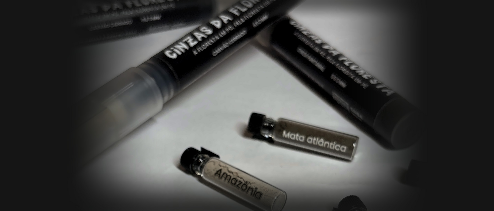
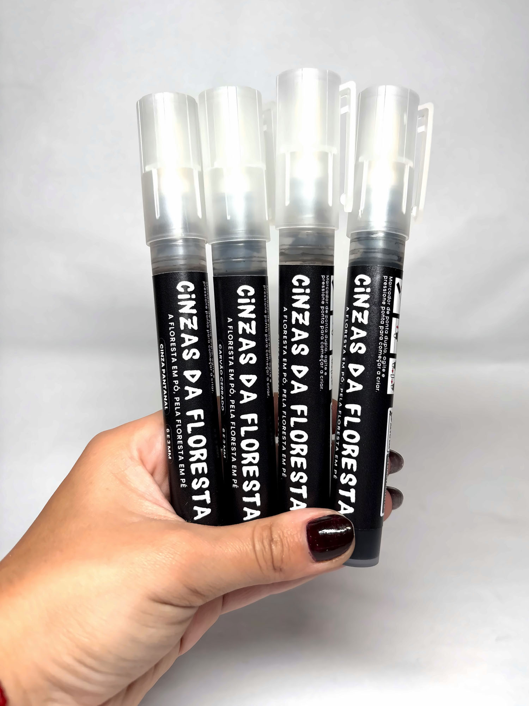
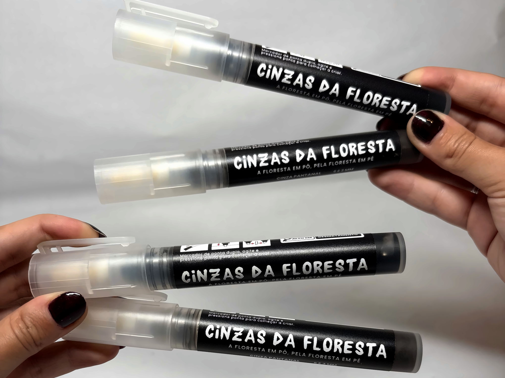
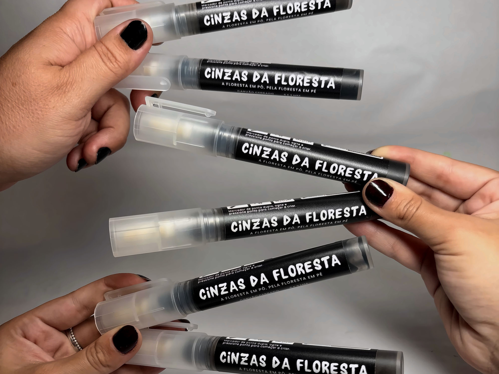
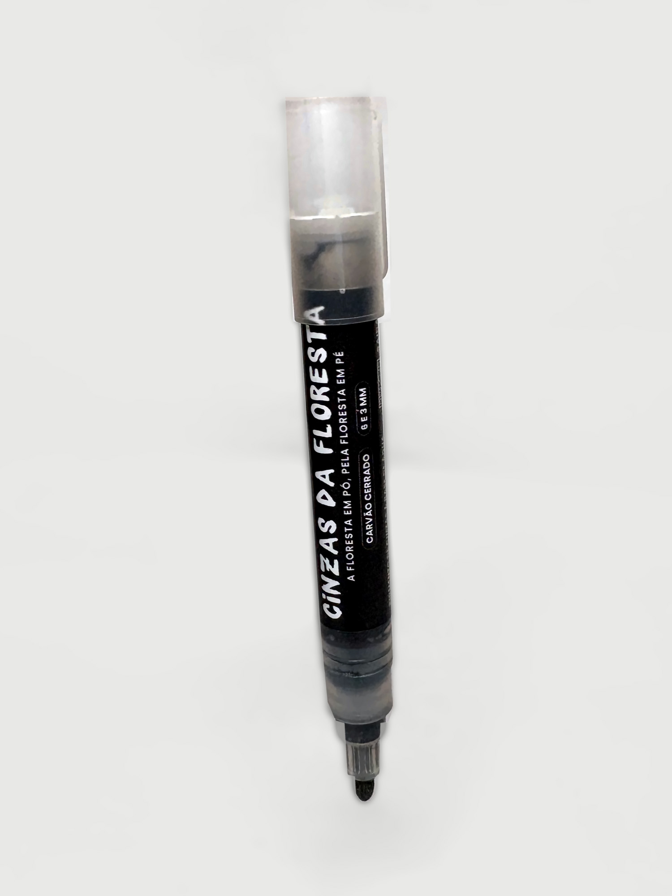

Cinzas do Cerrado
Carvão Cerrado
A mais escura da linha. Quase preto.

Canetas com tinta feita de cinza de incêndios florestais no Brasil. É o mesmo material dos murais do Cinzas da Floresta. Cada traço registra o que o fogo levou.
Ver as canetasTrês cinzas, três biomas
Pantanal, Cerrado e, agora, Amazônia. A cor muda com a floresta que pegou fogo.
A mais escura da linha. Quase preto.
A mais clara da linha. Um cinza que puxa para o prata.
Cinza de floresta amazônica queimada num incêndio que começou com um raio e cresceu com o super El Niño.

Do tamanho da mão
Não é peça de coleção. É caneta: para desenhar, escrever, anotar. Leva para o papel a mesma cinza que Mundano usa nos murais.
Ver as canetasFeito para quem cria
Cada traço é pequeno. Somados, mantêm o assunto vivo: as florestas estão queimando, e isso não pode virar rotina.


Kit de lançamento

De onde vem
Incêndio florestal deixa toneladas de cinza para trás. Normalmente ela vira lixo.
Brigadistas florestais voluntários, que estão na linha de frente do fogo, ajudam a recolher a cinza nas áreas queimadas.
A cinza vira tinta, a mesma dos murais do Cinzas da Floresta.
Cada linha leva o assunto das queimadas para o papel e para a conversa.
Quem apaga o fogo
São voluntários. Entram onde o fogo está, e é com eles que a cinza chega até aqui. O Cinzas da Floresta existe para mostrar o que o fogo deixa e quem arrisca a vida para apagá-lo.
Use a cinza. E conheça a trajetória de Mundano, da carroça à floresta.
Ver as canetasConhecer a trajetória